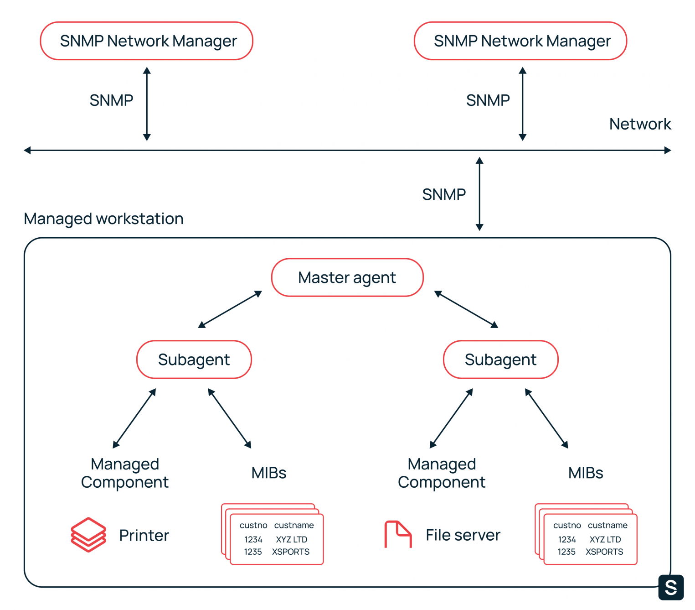

Simple Network Management Protocol (SNMP) — это протокол прикладного уровня, он делает возможным обмен данными между сетевыми устройствами.
SNMP — это не продукт, а свод правил. Он определен Советом по архитектуре Интернета и является частью пакета TCP/IP. SNMP управляется и поддерживается Инженерной группой Интернета (IETF).
Протокол позволяет системному администратору проводить мониторинг, контролировать производительность сети и изменять конфигурацию подключенных устройств. SNMP используют в сетях любого размера: чем крупнее сеть, тем лучше раскрываются преимущества протокола. Он позволяет просматривать, контролировать и управлять узлами через единый интерфейс с функциями пакетных команд и автоматического оповещения.
Таким образом, SNMP избавляет администратора от необходимости ввода команд вручную. Всего были разработаны и развернуты три версии. Все они используются до сих пор, а самой распространенной стала вторая — SNMPv2с.

Схема SNMP. Источник: IMB
Компоненты, составляющие архитектуру SNMP:
Network Management Station (NMS) удаленно мониторит управляемые устройства, получает данные, собранные мастер-агентами, отслеживает производительность и представляет полученную информацию в графическом виде. Встроенный менеджер NMS отвечает за связь с агентами.
Это программа, связывающая сетевых менеджеров и субагентов. Мастер-агент анализирует запросы сетевого менеджера NMS и пересылает их субагентам, собирает и формирует ответы субагентов и отправляет их менеджеру. Мастер-агент уведомляет менеджера, если запрос некорректен или запрошенная информация недоступна.
Это программа, поставляемая вендором вместе с сетевым устройством. Субагент пересылает собранную информацию мастер-агенту. У каждого управляемого компонента есть соответствующий субагент.
Это подключенное к сети устройство или программное обеспечение с встроенным субагентом. К таким устройствам относятся не только маршрутизаторы, коммутаторы и серверы, но и IP-видеокамеры, МФУ и IP-телефоны. К софту с субагентами также относятся антивирусные программы, системы резервного копирования, ПО для систем ИБП.
MIB — это иерархическая база данных со сведениями об устройстве. У каждого типа устройства своя MIB-таблица: у принтера в ней содержится информация о состоянии картриджей, а у коммутатора — данные о трафике. Благодаря MIB менеджер знает, какую информацию он может запросить у агента устройства.
Каждый объект в MIB имеет свой уникальный ID — OID, который представлен в числовом формате и имеет иерархическую структуру. OID — это числовой эквивалент пути к файлу. Он присваивает значения каждой таблице в MIB, каждому столбцу в таблице и каждому значению в столбце.
Например, OID 1.3.6.1.4.868.2.4.1.1.1.3.3562.3. означает:
iso.org.dod.internet.private.transition.products.chassis.card.slotCps.
cpsSlotSummary.cpsModuleTable.cpsModuleEntry.cpsModuleModel.3562.3.
Используя первые 6 цифр этого OID, можно пройти по дереву на схеме.
Схематичное представление дерева OID. Источник: IBM
Часть значений в OID содержит данные о производителе устройства, что позволяет быстро получить определенную информацию о девайсе.
Древовидная иерархия MIB и OID в SNMP выглядит несколько запутанной, но у нее есть свои преимущества. Это простая и гибкая система организации сетевых устройств, она работает вне зависимости от размера сети.
Изначально протокол должен был предоставить системным администраторам инструмент для управления интернетом. Однако, гибкая архитектура SNMP позволила проводить мониторинг всех сетевых устройств и управлять ими с одной консоли. Это и стало причиной распространения SNMP.
Менеджеры и агенты обмениваются данными через протокол UDP. Вместо него также может использоваться TCP, IPX или протокол MAC-уровня. Обмен данными основан на Protocol Data Unit (PDU).
Всего в SNMP семь PDU:
INFORM, GETBULK — есть только во второй и третьей версиях протокола SNMP.
|
IP заголовок |
TCP/IP |
TCP/IP |
|
UDP заголовок |
TCP/IP |
TCP/IP |
|
Версия SNMP |
v1/v2/v3 |
PDU |
|
Строка сообщества |
Public, Private |
PDU |
|
Тип PDU |
Get, GetNext, Response, Set, Trap, GetBulk, Inform |
PDU |
|
ID запроса |
Идентификатор запроса |
PDU |
|
Статус ошибки |
0, 1, 2, 3, 4, 5 |
PDU |
|
Индекс ошибки |
0, 1 |
PDU |
|
Связанные переменные |
Одна или несколько переменных в запросе |
PDU |
Статусы ошибок и их описание.
По умолчанию SNMP использует UDP-порты 161 и 162. Менеджер отправляет запросы на порт 161 агента. С порта 161 агент отправляет ответ менеджеру. При отправке запроса менеджер добавляет к нему ID, а агент вставляет этот ID в ответ, чтобы менеджер мог связать свой запрос с ответом агента.
Ловушки агент высылает на порт 162 менеджера. Если используется DLTS или TLS, то агент высылает сообщения на порт 10162, а менеджер — на порт 10161. Администратор может изменить порты SNMP, используемые по умолчанию, на любые другие.
Ловушка (Trap) — это важнейший способ коммуникации в SNMP. Менеджер отвечает за большое количество устройств, на многих из них может быть несколько управляемых компонентов. Агент отправляет ловушку по своей инициативе, когда необходимо сообщить менеджеру о событии. Например, ловушка может выслать отчет о перегреве машины или о том, что в тонере закончились чернила.
Получив уведомление, менеджер выбирает нужное действие, например, опрашивает агента, чтобы получить полное представление о том, что произошло. Перечень уведомлений, которые посылает ловушка:
В SNMP есть два типа ловушек: Trap и Inform. Отличия между ними в том, что после получения Inform менеджер подтверждает получение ловушки. В противном случае агент будет отправлять Inform, пока не получит подтверждения. А вот после получения Trap менеджер не отправляет подтверждение. Если сообщение не дошло до менеджера, агент об этом не узнает.
Первая версия протокола создана в 80-х годах XX века. Легка в настройке — требуется только строка community. Версия широко используется до сих пор.
Вторая версия протокола SNMP появилась в 1993 году. Разработчики добавили в нее новый запрос GetBulk и ловушку Inform, а также усовершенствовали безопасность.
У этой версии есть два способа коммуницировать с устройствами, поддерживающими SNMPv1: двуязычная система сетевого управления и прокси-агенты. Прокси-агенты выполняют роль мастер-агентов, а в двуязычной системе управления менеджер определяет, какую версию SNMP поддерживает агент, и связывается с ним через SNMPv1 или SNMPv2c.
Третья версия вышла в 1998 году. Разработчики добавили в SNMP криптографическую защиту, облегчили удаленную настройку и администрирование объектов. Этого удалось достичь за счет определения набора стандартизованных объектов управления, называемых объектами MIB удаленного сетевого мониторинга, — RMON MIB.
Изначально безопасность не была первоочередной задачей разработчиков. Первая версия SNMP была создана для удаленного администрирования во времена, когда угроза несанкционированного доступа была минимальной. Поэтому SNMPv1 слабо защищена от взлома, и злоумышленники могли использовать ее для проникновения в сетевую инфраструктуру.
В работе над второй версией протокола разработчики предложили несколько вариантов решения. Распространение получил вариант SNMPv2c — не самый надежный, но простой в использовании.
Основная проблема с безопасностью в том, что почти все оборудование поддерживает версию SNMPv1. И только часть работает с версиями SNMPv2с и SNMPv3. Именно поэтому самой популярной стала SNMPv2с. Она способна работать с устройствами, которые поддерживают первую или вторую версии SNMP.
|
SNMPv1 |
Community–based security |
|
SNMPv2c |
Community–based security |
|
SNMPv2u |
User–based security |
|
SNMPv2 |
Party–based security |
|
SNMPv3 |
User–based security |
Community-based Security — модель безопасности на основе строки сообщества. Фактически это идентификатор пользователя или пароль, который отправляется вместе с запросом. Если строка сообщества неверна, агент игнорирует запрос.
Строка сообщества зависит от вендора устройства. Часто вендоры по умолчанию выбирают «PUBLIC» в качестве пароля, поэтому первым делом на новых устройствах нужно изменить строку сообщества для защиты сети от злоумышленников.
Строки сообщества бывают трех видов:
Строка сообщества широко используется из-за своей простоты и наличия внешних систем безопасности.
Party-based Security Model — модель на основе так называемых «сторон». Для коммуникации между менеджером и агентов выбирается логическая сущность, называемая стороной. Она устанавливает протоколы аутентификации и шифрования, а отправитель и получатель соглашаются со способом шифрования и дешифровки данных. Сложность использования модели помешала ее распространению среди пользователей.
User-based Security Model — модель безопасности на основе пользователей. Уровни аутентификации, безопасности и конфиденциальности протоколов и ключей настраиваются у агента и менеджера.
Лучше всего безопасность проработана в третьей версии SNMP за счет USM и VACM. Упрощенно VACM (View-based Access Control Model) можно описать как модель с разными уровнями доступа для групп менеджеров. При получении запроса агент решает, разрешен ли определенной группе менеджеров доступ к чтению, записи и получению уведомлений.
Если системный администратор не использует SNMP, то он должен отключить его на устройствах.
С помощью SNMP администратор управляет приложениям и облачными сервисами, администрирует локальную сеть и контролирует состояние сервера с одной консоли.
Благодаря протоколу администратор может:
При помощи стороннего ПО можно также:
Протокол по умолчанию должен работать с IPv4 или IPv6. На практике IPv6 создает определенные проблемы для работы SNMP. Эти проблемы связаны объектами MIB, содержащими сетевые адреса. OID в MIB хранят информацию для нескольких уровней TCP/IP, и различия между IPv4 и IPv6 будут отражены в OID.
Отсутствие поддержки IPv6 в существующих объектах MIB проявляется двумя способами:
Эти проблемы решаются также двумя способами:
Она подробно описана в документации Microsoft.
Пуск → Панель управления → Администрирование → Управление компьютером.
Пуск → Панель управления → Администрирование → Управление компьютером.
Пуск → Панель управления → Администрирование → Управление компьютером.
Сначала нужно установить последние обновления при помощи yum/dnf:
yum update
затем установить SNMP:
yum install net-snmp net-snmp-utils
и создать копию конфигурационного файла:
mv /etc/snmp/snmpd.conf /etc/snmp/snmpd.conf.orig
теперь нужно отредактировать настройки агента:
nano /etc/snmp/snmpd.conf
и добавить строки:
community public
syslocation MyLocation
syscontact admin@example.com
Локацию и email лучше указать реальные.
Пора добавить сервис в автозагрузку и перезапустить его:
systemctl enable snmpd.service
systemctl start snmpd
Как проверить, что сервис запущен:
systemctl status snmpd
Опрос агента с помощью утилиты snmpwalk:
snmpwalk -v 2c -c public -O e 127.0.0.1
Опрос сервера локально командой:
snmpwalk -v2c -c public localhost system
Сначала нужно установить демона, клиента и файлы:
apt install snmpd snmp libsnmp-dev
После установки переходим к настройке SNMP в Debian.
Файлом настройки SNMP-агента по умолчанию является /etc/snmp/snmpd.conf. Агент SNMP может быть запущен с настройками по умолчанию. Однако для включения удаленного мониторинга нужно сделать несколько изменений. Для этого создайте резервную копию файла:
cp /etc/snmp/snmpd.conf /etc/snmp/snmpd.conf.orig
Теперь нужно изменить директиву agentAdress. Ее текущие настройки разрешают доступ только с локального компьютера. Для включения удаленного мониторинга необходимо определить IP-адрес интерфейса:
> vim /etc/snmp/snmpd.conf
###############################################################################
#
# AGENT BEHAVIOUR
#
# Listen for connections from the local system only
agentAddress udp:127.0.0.1:161,udp:192.168.43.62:161
Для настройки аутентификации:
directive community [source [OID]]
rocommunity предоставляет доступ только на чтение, а rwcommunity дает доступ к чтению/записи. В Access Control section нужно поместить строку:
rocommunity S3CUrE 192.168.43.100
Кроме того, можно включить запрос с локального хоста rocommunity S3CUrE localhost:
rouser authOnlyUser
rwuser authPrivUser priv
rocommunity S3CUrE localhost
rocommunity S3CUrE 192.168.43.100
Затем нужно перезапустить SNMP:
systemctl restart snmpd
Чтобы добавить сервис в автозагрузку, введите:
systemctl enable snmpd
SNMP — это простой и эффективный способ для сбора и обмена информацией между сетевыми устройствами, которые выпущены разными вендорами и работают на разном ПО. Этот протокол — не идеальное, но все еще одно из лучших решений для мониторинга и управления. На сегодняшний день нет другого инструмента с сопоставимым уровнем поддержки и использования.
Созданный 30 лет назад SNMP продолжает работать, потому что он обладает характеристиками, которых нет ни у одной из его аналогов. Он простой в использовании, бесплатный и поддерживается практически всеми вендорами.